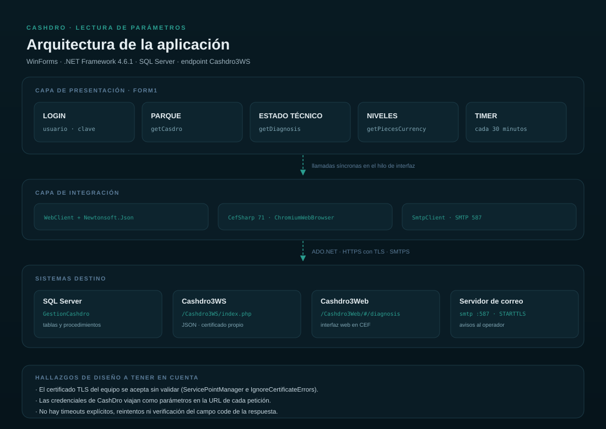
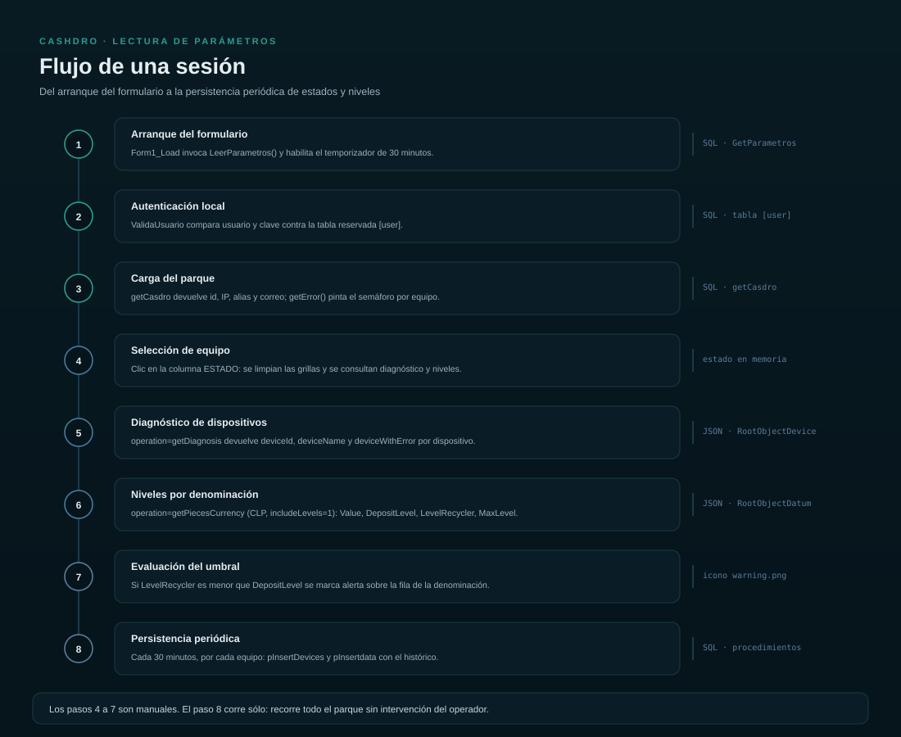
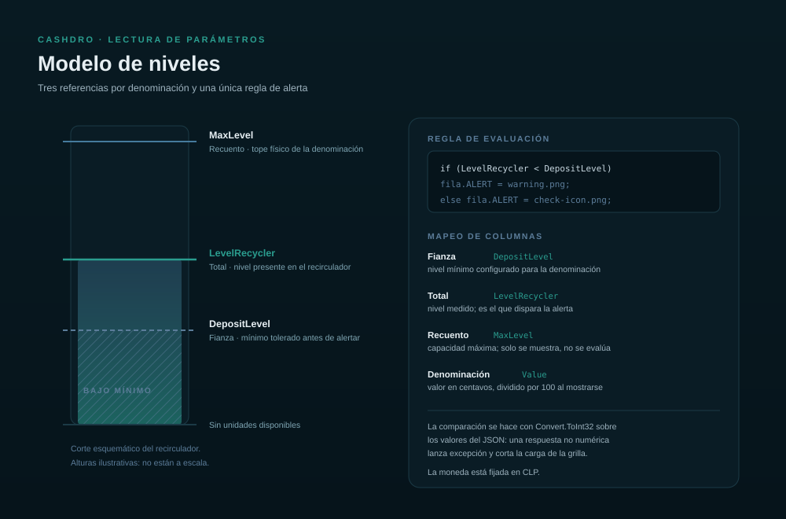

Leer la máquina.
Sin adivinar.
Una consola Windows que consulta los parámetros técnicos y financieros de una CashDro.

Qué es y por qué existe
Aplicación de escritorio para supervisar un parque de máquinas CashDro desde Windows. Consulta cada equipo por HTTPS y JSON, muestra diagnóstico, piezas por moneda y estado en tres grillas, y ejecuta un barrido automático cada treinta minutos que persiste los resultados en SQL Server. Está destinada a operadores de sala de juegos o retail que necesitan una vista consolidada sin entrar máquina por máquina.
El repositorio conserva el código de una herramienta operativa, no un producto instalable: depende de .NET Framework 4.6.1, CefSharp, SQL Server y componentes comerciales. La documentación proviene de análisis estático y declara que no se compiló ni se probó contra hardware; ese contexto explica sus decisiones más discutibles, como desactivar la validación TLS o limpiar la grilla durante el barrido.
Documentación preservada
El README original, completo y en su contexto.
Aplicación de escritorio para consultar los parámetros técnicos y financieros de un parque de máquinas CashDro desde un único puesto Windows.
C# · WinForms · .NET Framework 4.6.1 · SQL Server · CefSharp · Licencia MIT
Tabla de contenido
- Qué es
- El problema que resuelve
- Principio de funcionamiento
- La pantalla
- Arquitectura
- Flujo de una sesión
- Conexión con CashDro
- Parámetros leídos
- Modelo de niveles
- Persistencia en SQL Server
- Configuración
- Compilación
- Operación
- Ejemplos de uso
- Ajuste de umbrales
- Códigos de error y diagnóstico
- Seguridad
- Límites y estado de esta revisión
- Estructura del repositorio
- Documentación adicional
- Licencia
1. Qué es
Un formulario Windows que se conecta por HTTPS a la API interna de cada máquina CashDro, lee dos conjuntos de datos y los muestra en tres grillas:
| Grilla | Contenido | Origen |
|---|---|---|
| Parque de máquinas | Una fila por equipo, con IP, alias y semáforo | SQL Server (getCasdro) |
| Estado técnico | Un renglón por dispositivo interno del equipo | getDiagnosis |
| Consulta niveles On Line | Un renglón por denominación, con fianza, total y recuento | getPiecesCurrency |
Además, cada 30 minutos recorre todo el parque y escribe el resultado en SQL Server, de modo que se construye un histórico de estados y niveles sin intervención humana.
Alcance: aplicación de solo lectura. No configura, no carga, no retira y no reinicia nada en la máquina. Consulta y registra.
1.1 Ficha rápida
| Campo | Valor |
|---|---|
| Nombre del proyecto | cashdro |
| Tipo | WinExe (aplicación de escritorio) |
| Framework | .NET Framework 4.6.1 |
| Solución | Visual Studio 2017, formato 12.00 |
| Plataforma | Windows únicamente |
| Persistencia | SQL Server, base GestionCashdro |
| Interfaz web embebida | CefSharp 71 (Chromium) |
| Moneda | CLP, fija en esta versión |
| Intervalo de monitoreo | 30 minutos |
| Licencia | MIT |
2. El problema que resuelve
Un operador que administra varias máquinas CashDro enfrenta tres preguntas todos los días:
- ¿Alguna máquina tiene un dispositivo en falla? La consola del fabricante responde bien, pero hay que entrar equipo por equipo.
- ¿Algún recirculador quedó por debajo del mínimo? Si nadie lo nota, la máquina deja de devolver vuelto y el usuario final se queda sin cambio.
- ¿Qué pasó ayer a las 15:00 cuando se cayó el lector? Sin histórico, la respuesta se pierde.
La aplicación ataca las tres con una sola pantalla y un barrido periódico que persiste el estado. El resultado es un tablero de monitoreo mínimo, no un sistema de gestión completo: la máquina sigue siendo la fuente de verdad y la configuración se hace en ella.
2.1 Escenario típico
07:50 El operador abre la aplicación y valida su usuario local.
07:51 Ve 12 máquinas: 11 con ✓ y una con ⚠.
07:52 La máquina 7 no responde: el semáforo está en rojo por criterio conservador.
07:55 El operador revisa el switch de la sucursal y la máquina vuelve.
08:00 Selecciona la máquina 3 y confirma que la denominación de $100 está bajo fianza.
08:01 Abre la consola web embebida y pide el recargue al supervisor.
08:30 El barrido automático guarda el estado de todo el parque en SQL Server.
3. Principio de funcionamiento
No hay sensor ni bus de campo: el principio es sondeo HTTP con contrato JSON sobre una red local.
Petición GET (HTTPS, certificado autofirmado)
─────────────────────────────────────────────►
https://<IP_EQUIPO>/Cashdro3WS/index.php?operation=getDiagnosis
Respuesta JSON
◄─────────────────────────────────────────────
{ "code": 0, "data": { "WithError": false, "Devices": [ ... ] } }
Cuatro ideas sostienen el diseño:
- La máquina expone su estado por HTTP. El servicio
Cashdro3WSpublica operaciones tipo RPC (operation=...) que devuelven JSON. No hay SDK ni base de datos directa. - El certificado es autofirmado. Por eso la aplicación desactiva la validación TLS
(
ServicePointManager.ServerCertificateValidationCallbackyIgnoreCertificateErrorsen CEF). Es la decisión de diseño más discutible del proyecto y se analiza en §17. - La autenticación viaja en la URL. El usuario y la clave de CashDro se concatenan como parámetros de la query string en las operaciones que los requieren.
- El estado se persiste por sondeo. Un
System.Windows.Forms.Timerdispara cada 30 minutos un recorrido secuencial por todas las máquinas y guarda el resultado mediante procedimientos almacenados.
3.1 Qué se lee exactamente
- Estado técnico: la lista de dispositivos con un booleano
deviceWithError. - Estado financiero: por cada denominación, el nivel actual, el mínimo tolerado y la capacidad máxima.
Nada más. No se leen transacciones, no se leen logs de auditoría y no se modifica la configuración del equipo.
4. La pantalla
El formulario mide 1088 × 580 px, se centra en pantalla y se titula Sistema integrado.
La disposición es fija (no hay anclaje responsive): está pensada para 1366 × 768 o más.
LOGIN Parque de maquinas
Usuario [________] Item │ IP Equipo │ Nombre │ ESTADO
Clave [********] 1 │ <IP> │ Caja 1 │ ✓
[validar] 2 │ <IP> │ Caja 2 │ ⚠
Estado tecnico Consulta Niveles On Line
Item │ Nombre │ Err? │ STATUS Moneda │ Denom │ Fianza │ Total
| Etiqueta visible | Panel |
|---|---|
LOGIN |
Usuario y clave locales + botón validar |
Parque de maquinas |
Grilla principal del parque |
Estado tecnico |
Grilla de dispositivos del equipo elegido |
Consulta Niveles On Line |
Grilla de denominaciones del equipo elegido |
Los iconos de estado se cargan desde archivos PNG en disco (D:\imagenes\), no desde
recursos embebidos. Es un detalle de despliegue importante: si esa carpeta no existe, la
grilla falla al pintar.
5. Arquitectura

5.1 Capas
| Capa | Implementación | Archivo |
|---|---|---|
| Presentación | Un formulario principal y un visor modal | Form1.cs, webBrownser.cs |
| Integración HTTP | WebClient + JsonConvert |
Form1.cs |
| Integración web | ChromiumWebBrowser (CefSharp) |
webBrownser.cs |
| Integración de correo | SmtpClient |
Form1.cs |
| Acceso a datos | SqlConnection / SqlCommand |
Form1.cs, funciones.cs |
| Contratos | DTOs planos | dataClass.cs |
No hay separación real entre capas: la lógica de negocio, el acceso a datos y la
manipulación de controles conviven en Form1.cs. La arquitectura es, en la práctica, un
formulario que hace todo.
5.2 Archivos
| Archivo | Rol |
|---|---|
Program.cs |
Punto de entrada [STAThread] |
Form1.cs |
Login, consultas, persistencia, alertas |
Form1.Designer.cs |
Layout y columnas de las tres grillas |
dataClass.cs |
RootObjectDevice, Device, RootObjectDatum, Datum |
webBrownser.cs |
Visor Chromium embebido |
funciones.cs |
Utilidad de datos sin uso actual |
App.config |
Runtime .NET 4.6.1 y probing privatePath="x86" |
packages.config |
CefSharp, cef.redist, Newtonsoft.Json |
cashdro.csproj / .sln |
Proyecto y solución de Visual Studio |
5.3 Decisiones estructurales
- Todo síncrono. No hay
async; las llamadas bloquean el hilo de interfaz. Simple de leer, malo para la experiencia cuando hay muchas máquinas. - Un solo formulario. El visor web se abre como diálogo modal, no como pestaña.
- Configuración embebida. Cadena de conexión, ruta de imágenes, moneda y credenciales están en el código.
- Persistencia por SP. La base define el contrato de escritura; la aplicación solo envía parámetros.
6. Flujo de una sesión

| # | Paso | Detalle |
|---|---|---|
| 1 | Arranque | Form1_Load ejecuta LeerParametros() y arma el timer |
| 2 | Login | ValidaUsuario consulta la tabla [user] |
| 3 | Parque | getCasdro trae id, ip, alias; getError() pinta el semáforo |
| 4 | Selección | Clic en la columna ESTADO → dos consultas |
| 5 | Diagnóstico | getDiagnosis → dispositivos |
| 6 | Niveles | getPiecesCurrency → denominaciones |
| 7 | Evaluación | LevelRecycler < DepositLevel → alerta |
| 8 | Persistencia | Timer → pInsertDevices + pInsertdata por equipo |
Los pasos 4 a 7 son manuales. El paso 8 corre solo. La consecuencia práctica es que el histórico se construye aunque nadie mire la pantalla, pero el detalle por dispositivo solo se ve cuando alguien lo pide.
7. Conexión con CashDro
7.1 Anatomía de las URL
https://<IP_EQUIPO>/Cashdro3WS/index.php?operation=getDiagnosis
https://<IP_EQUIPO>/Cashdro3WS/index.php
?operation=getPiecesCurrency
¤cyId=CLP
&includeImages=0
&includeLevels=1
&name=USUARIO_CASHDRO
&password=CLAVE_CASHDRO
| Elemento | Valor | Nota |
|---|---|---|
| Esquema | https |
El equipo sirve TLS con certificado propio |
| Host | IP del equipo | No hay descubrimiento: la IP viene de SQL |
| Ruta | /Cashdro3WS/index.php |
Endpoint del servicio |
| Operación | getDiagnosis / getPiecesCurrency |
Selector tipo RPC |
| Moneda | CLP |
Fija en el código |
| Imágenes | includeImages=0 |
Evita transferir base64 innecesario |
| Niveles | includeLevels=1 |
Necesario para fianza, total y recuento |
La consola web vive en otra ruta: https://<IP_EQUIPO>/Cashdro3Web/#/diagnosis. Es una
aplicación de una sola página que el visor CEF carga con las credenciales también en la
URL.
7.2 Comportamiento TLS
En Form1():
CefSettings settings = new CefSettings();
settings.IgnoreCertificateErrors = true;
Cef.Initialize(settings);
Y en cada método HTTP:
ServicePointManager.ServerCertificateValidationCallback = delegate { return true; };
Es decir: se acepta cualquier certificado, de cualquier host, durante toda la vida del proceso. Funciona, pero anula la única defensa contra un intermediario en la LAN. La alternativa correcta es instalar el certificado del equipo en el almacén de confianza de Windows y dejar la validación activa (§17.3).
7.3 Qué pasa si el equipo no responde
getError() captura cualquier excepción y devuelve true. El semáforo queda en ⚠ y la
máquina se considera con falla. Es un criterio conservador y correcto para monitoreo,
pero impide distinguir entre:
- equipo apagado,
- equipo con un dispositivo en falla,
- error de credenciales,
- cambio de contrato en el JSON.
Para distinguirlos hace falta registro (§16.3).
8. Parámetros leídos
8.1 Diagnóstico — getDiagnosis
| Campo | Tipo JSON | Significado operativo |
|---|---|---|
Devices[].deviceId |
object | Identificador del dispositivo (columna Item) |
Devices[].deviceName |
string | Nombre lógico (columna Nombre) |
Devices[].deviceWithError |
bool | Falla reportada (columna Error?) |
La respuesta trae además code, data.WithError, deviceType, deviceState,
deviceModel, portName, portProtocol, portState, ip, tooManyChanges,
deviceMessagesInfo y portMessagesInfo. Se deserializan y se descartan: hay
información de diagnóstico disponible que la interfaz no muestra (modelo, estado del
puerto, mensajes). Es la extensión más rentable del proyecto.
8.2 Niveles — getPiecesCurrency
| Campo | Tipo JSON | Significado |
|---|---|---|
CurrencyId |
string | Moneda (CLP) |
Value |
string | Valor facial en centavos |
DepositLevel |
string | Fianza: mínimo tolerado |
LevelRecycler |
object | Nivel actual del recirculador |
MaxLevel |
string | Capacidad máxima |
Se ignoran code, MinLevel, MaxLevelTemp, DepositLevelTemp, Type,
Destination, MaxPiecesExchange, MaxPiecesChange, MaxPiecesCancel,
IsChargeable, State, Image y LevelCasete. El diccionario completo, campo por
campo, está en docs/datasheet.md.
8.3 Conversión de valores
Value llega en centavos y se muestra dividido por 100:
string numero = d.Value.ToString();
dataGridViewdata.Rows[n].Cells[1].Value = Convert.ToUInt32(numero) / 100;
Value recibido |
Mostrado | Denominación real |
|---|---|---|
1000 |
10 | $10 |
5000 |
50 | $50 |
10000 |
100 | $100 |
50000 |
500 | $500 |
100000 |
1000 | $1 000 |
200000 |
2000 | $2 000 |
Como CLP no usa decimales, la división entera alcanza. Si algún día se habilita una
moneda con centavos reales, hay que cambiar la presentación y la comparación.
9. Modelo de niveles

Cada denominación tiene tres referencias y una regla:
int depositlevel = Convert.ToInt32(d.DepositLevel); // mínimo tolerado
int levelrecycler = Convert.ToInt32(d.LevelRecycler); // nivel actual
if (levelrecycler < depositlevel)
// alerta: warning.png
else
// normal: check-icon.png
| Columna en pantalla | Campo | Qué mirar |
|---|---|---|
| Fianza | DepositLevel |
Umbral configurado en la máquina |
| Total | LevelRecycler |
Piezas disponibles ahora |
| Recuento | MaxLevel |
Tope físico; no participa de la alerta |
La alerta es por denominación, no por equipo: un equipo puede estar en verde de forma
global y tener una denominación en alerta. picOk (el semáforo grande) resume el parque
completo, no la fila seleccionada.
9.1 Por qué la alerta usa < y no <=
Con Total == Fianza la denominación se considera operativa. Si tu política interna exige
mantener un colchón por sobre el mínimo, el umbral debe configurarse más alto en la
máquina, no en la aplicación: la app compara contra lo que el equipo declara.
10. Persistencia en SQL Server
10.1 Objetos que la aplicación espera
| Objeto | Tipo | Entradas | Devuelve / efecto |
|---|---|---|---|
GetParametros |
SP | — | CorreoFrom, CorreoPass, Cliente |
getCasdro |
SP | — | id, ip, alias, correoAlerta |
[user] |
tabla | usuario, pass |
Conteo para el login |
pInsertDevices |
SP | @cliente, @deviceName, @deviceWithError, @IP |
Inserta estado técnico |
pInsertdata |
SP | @cliente, @currencyId, @Value, @depositLevel, @LevelRecycler, @IP, @MaxLevel |
Inserta niveles |
La base se llama GestionCashdro. No se incluye en el repositorio: hay que crearla o
restaurarla desde el respaldo corporativo.
10.2 Esquema mínimo para un laboratorio
La base necesita cinco objetos:
| Objeto | Columnas imprescindibles |
|---|---|
[user] |
usuario, pass |
Parametros |
CorreoFrom, CorreoPass, Cliente |
Maquinas |
id, ip, alias, correoAlerta |
Devices |
cliente, deviceName, deviceWithError, ip, fecha de lectura |
Niveles |
cliente, currencyId, Value, depositLevel, levelRecycler, maxLevel, ip, fecha de lectura |
El DDL completo, listo para ejecutar, está en
docs/developer.md (§6.2). [user] va entre corchetes porque
USER es palabra reservada en T-SQL.
10.3 Costo del barrido
Cada tick abre una conexión por fila insertada. Con 20 equipos, 6 dispositivos y 8 denominaciones:
20 × (6 + 8) = 280 conexiones y 280 comandos por tick
280 × 48 ticks/día ≈ 13 440 inserciones diarias
Es suficiente para un tablero, pero conviene agrupar en una transacción y reutilizar la
conexión; el patrón está descrito en
docs/developer.md.
10.4 Consultas útiles sobre el histórico
-- Último estado conocido por equipo
SELECT ip, deviceName, deviceWithError, MAX(leido) AS visto
FROM Devices
GROUP BY ip, deviceName, deviceWithError
ORDER BY visto DESC;
-- Denominaciones que estuvieron bajo fianza en las últimas 24 horas
SELECT ip, currencyId, Value, levelRecycler, depositLevel, leido
FROM Niveles
WHERE leido >= DATEADD(HOUR, -24, GETDATE())
AND TRY_CONVERT(INT, levelRecycler) < TRY_CONVERT(INT, depositLevel)
ORDER BY leido DESC;
-- Equipos que dejaron de reportar
SELECT ip, MAX(leido) AS ultimo
FROM Devices
GROUP BY ip
HAVING MAX(leido) < DATEADD(HOUR, -2, GETDATE());
11. Configuración
No hay archivo de configuración funcional: todo está en el código. Estos son los puntos que hay que tocar antes de compilar o desplegar.
| Qué | Dónde | Valor en el repositorio |
|---|---|---|
| Cadena de conexión SQL | Form1.cs, campo _cnLocal; funciones.cs, campo cnLocal |
Data Source=<SERVIDOR>;Initial Catalog=GestionCashdro;User Id=USUARIO_CASHDRO;Password=CLAVE_CASHDRO |
| Ruta de iconos | Form1.cs, campo pathImg |
D:\imagenes\ |
| Moneda | cargaGridData / cargaTblData |
CLP |
| Intervalo del timer | Form1_Load |
1 800 000 ms |
| Servidor SMTP | enviaCorreo |
smtp.gmail.com, puerto 587, SSL |
| Destinatario de alertas | getCasdro → correoAlerta |
Por equipo |
| Remitente y clave | GetParametros → CorreoFrom, CorreoPass |
En base de datos |
| Credenciales CashDro | URL de getPiecesCurrency y del visor |
USUARIO_CASHDRO / CLAVE_CASHDRO (marcadores) |
11.1 Cadena de conexión
Data Source=<SERVIDOR>\<INSTANCIA>;Initial Catalog=GestionCashdro;
User Id=<USUARIO>;Password=<CLAVE>;Connect Timeout=5
Se usa autenticación SQL (usuario y clave en la cadena), no autenticación integrada de
Windows. La cadena está duplicada en dos archivos; si la cambias, cámbiala en ambos
(aunque funciones.cs no se use, deja una copia de las credenciales en el binario).
11.2 Archivos que deben existir en el puesto
| Archivo | Ruta | Contenido |
|---|---|---|
warning.png |
D:\imagenes\warning.png |
Icono de alerta |
check-icon.png |
D:\imagenes\check-icon.png |
Icono correcto |
libcef.dll y recursos |
junto al .exe |
Los copia NuGet al compilar |
Newtonsoft.Json.dll |
junto al .exe |
Ídem |
Los dos PNG no están en el repositorio. Cualquier icono cuadrado de 16 × 16 o mayor
sirve; el PictureBox los escala con StretchImage.
12. Compilación
12.1 Requisitos
| Herramienta | Versión |
|---|---|
| Windows | 7 SP1 o superior |
| Visual Studio | 2017 o superior con cargas ".NET desktop development" |
| .NET Framework | 4.6.1 Developer Pack |
| NuGet | 4.x o superior (o el integrado en VS) |
| Visual C++ Redistributable | 2015-2022 (para libcef.dll) |
12.2 Disposición del árbol
Los HintPath del proyecto apuntan a ..\packages\, y la solución espera el proyecto en
una subcarpeta cashdro\:
<raiz>\
├── cashdro.sln
├── packages\ ← restaurado por NuGet
└── cashdro\ ← contenido de versions/Lectura-parametros-maquina-Cashdro
├── cashdro.csproj
├── Form1.cs
└── ...
Si abres la carpeta de la versión tal cual, la solución no encontrará el proyecto. Reproduce esta estructura o edita las rutas relativas.
12.3 Pasos
# 1. Restaurar dependencias
nuget restore cashdro.sln
# 2. Compilar
msbuild cashdro.sln /p:Configuration=Release /p:Platform="Any CPU"
# 3. Verificar la salida
dir cashdro\bin\Release\cashdro.exe
Desde Visual Studio:
- Abrir
cashdro.sln. - Clic derecho en la solución → Restore NuGet Packages.
- Elegir
ReleaseyAny CPU(ox86). - Build → Build Solution (
Ctrl+Shift+B).
12.4 Archivos que faltan y hay que recrear
El .csproj referencia archivos que no están en la carpeta:
| Referencia | Estado | Acción |
|---|---|---|
Properties\AssemblyInfo.cs |
Ausente | Recrear con los atributos de ensamblado o quitar del .csproj |
Properties\Resources.resx + .Designer.cs |
Ausentes | Recrear o quitar |
Properties\Settings.settings + .Designer.cs |
Ausentes | Recrear o quitar |
packages\ |
Ausente | nuget restore |
DevComponents.DotNetBar2 14.1.0.18 |
Ausente | Instalar el componente o cambiar la clase base de webBrownser |
Contenido mínimo de AssemblyInfo.cs para poder compilar:
using System.Reflection;
using System.Runtime.InteropServices;
[assembly: AssemblyTitle("cashdro")]
[assembly: ComVisible(false)]
[assembly: Guid("5a6b30c5-8693-4d75-9326-c19c11d3d5af")]
[assembly: AssemblyVersion("1.0.0.0")]
12.5 Any CPU o x86
CefSharpAnyCpuSupport=true está activo en la configuración principal y en
Release|AnyCPU. Eso hace que CEF arranque un proceso hijo con la arquitectura correcta.
Si el puesto es de 32 bits, compila en x86 y usa cef.redist.x86. Mezclar arquitecturas
produce BadImageFormatException al inicializar CEF, no al compilar.
12.6 Errores de compilación frecuentes
| Error | Causa | Solución |
|---|---|---|
CefSharp could not be found |
Paquetes sin restaurar | nuget restore |
DevComponents could not be found |
Falta DotNetBar | Instalar componente o cambiar base a Form |
Source file 'Properties\AssemblyInfo.cs' could not be found |
Archivo ausente | Recrearlo (§12.4) |
missing file is ..\packages\cef.redist...props |
Restauración incompleta | Borrar obj\, restaurar de nuevo |
The OutputPath property is not set |
Configuración/plataforma inexistente | Usar Any CPU o x86 |
13. Operación
13.1 Arranque
- Ejecuta
cashdro.exe. - La aplicación inicializa CEF y lee parámetros desde SQL.
- Espera el login.
Si la base no responde, la ventana abre igual pero sin datos y el login no funciona: la validación de usuario también consulta SQL.
13.2 Login
Introduce el usuario local (tabla [user]), no el de CashDro. La clave se enmascara
con *. Al pulsar validar:
- coincidencia exacta → se carga el parque;
- sin coincidencia →
YOU ARE NOT GRANTED WITH ACCESSy los campos se limpian.
13.3 Lectura del parque
| Icono | Significado |
|---|---|
| ✓ | Todos los dispositivos sin error |
| ⚠ | Al menos un dispositivo con error, o equipo inaccesible |
La etiqueta lblMensaje muestra Conectando con <IP>...... mientras recorre. Es el único
indicador de progreso.
13.4 Detalle por equipo
Haz clic en la celda de la columna ESTADO. Se llenan las dos grillas de la derecha.
Si la fila está en ⚠, la celda es de solo lectura y el clic no abre el detalle. Es una limitación conocida: para revisar una máquina en falla hay que usar la consola del fabricante.
13.5 Consola web embebida
Un clic en la columna STATUS de la grilla de dispositivos abre una ventana titulada
Diagnosis con el navegador Chromium apuntando a la consola del equipo. Es la vista
completa del fabricante: permite ver mensajes, modelos y estados que la API entrega pero
la aplicación descarta.
13.6 Monitoreo automático
No requiere acción. Cada 30 minutos:
getCasdro → por cada equipo → getDiagnosis → pInsertDevices
→ getPiecesCurrency → pInsertdata
Durante el barrido la interfaz puede congelarse. Además, el barrido limpia la grilla visible del parque y no la vuelve a llenar: pasados los 30 minutos, la lista de equipos aparece vacía hasta que se vuelva a validar el usuario. Es un defecto conocido y está listado en §18.
14. Ejemplos de uso
14.1 Consultar el diagnóstico con PowerShell
Útil para verificar conectividad antes de abrir la aplicación:
$equipo = "<IP_EQUIPO>"
# PowerShell 7+
$diag = Invoke-RestMethod -Uri "https://$equipo/Cashdro3WS/index.php?operation=getDiagnosis" `
-SkipCertificateCheck
$diag.code
$diag.data.WithError
$diag.data.Devices | Select-Object deviceId, deviceName, deviceWithError | Format-Table
Con Windows PowerShell 5.1 hay que aceptar el certificado manualmente:
[System.Net.ServicePointManager]::ServerCertificateValidationCallback = { $true }
$diag = Invoke-RestMethod -Uri "https://$equipo/Cashdro3WS/index.php?operation=getDiagnosis"
14.2 Consultar niveles con PowerShell
$equipo = "<IP_EQUIPO>"
$url = "https://$equipo/Cashdro3WS/index.php?operation=getPiecesCurrency" +
"¤cyId=CLP&includeImages=0&includeLevels=1" +
"&name=USUARIO_CASHDRO&password=CLAVE_CASHDRO"
$niveles = Invoke-RestMethod -Uri $url -SkipCertificateCheck
$niveles.data |
Select-Object CurrencyId,
@{n='Denominacion'; e={ [int]$_.Value / 100 }},
@{n='Fianza'; e={ [int]$_.DepositLevel }},
@{n='Total'; e={ [int]$_.LevelRecycler }},
@{n='Recuento'; e={ [int]$_.MaxLevel }},
@{n='Alerta'; e={ [int]$_.LevelRecycler -lt [int]$_.DepositLevel }} |
Sort-Object Denominacion |
Format-Table
14.3 Cliente C# mínimo para integrar en otro sistema
Este fragmento no forma parte del proyecto: muestra cómo reutilizar el mismo contrato
desde otra aplicación, con timeout y validación de code. Usa las mismas clases de
dataClass.cs.
private static readonly HttpClient Http = new HttpClient
{
Timeout = TimeSpan.FromSeconds(10)
};
public static List<Device> GetDiagnosis(string ip)
{
string url = $"https://{ip}/Cashdro3WS/index.php?operation=getDiagnosis";
string json = Http.GetStringAsync(url).GetAwaiter().GetResult();
var root = JsonConvert.DeserializeObject<RootObjectDevice>(json);
if (root == null || root.code != 0 || root.data?.Devices == null)
throw new InvalidOperationException($"Respuesta inválida. code={root?.code}");
return root.data.Devices;
}
El
HttpClientde este ejemplo sí valida el certificado. Para un equipo con certificado autofirmado, registra el certificado en el almacén de Windows en lugar de desactivar la validación.
15. Ajuste de umbrales
La aplicación no calibra nada: no hay sensor que calibrar. Lo que sí existe es un
umbral operativo, la fianza (DepositLevel), que se configura en la máquina y la
aplicación solo compara.
| Quiero… | Dónde se cambia |
|---|---|
| Que la alerta salte antes | Subir DepositLevel en la configuración de la máquina |
| Que no moleste por denominaciones poco usadas | Bajar DepositLevel de esa denominación |
| Cambiar el intervalo de monitoreo | timer1.Interval en Form1_Load |
| Cambiar la ruta de iconos | pathImg en Form1.cs |
15.1 Cómo verificar que el umbral es el correcto
- Deja la máquina con una denominación justo en la fianza.
- Consulta los niveles:
Totaldebe ser igual aFianzay la fila debe salir en verde. - Retira una pieza y vuelve a consultar: debe salir en ⚠.
- Devuélvela y confirma que vuelve a verde.
Si el paso 2 sale en rojo, revisa que la máquina no esté reportando DepositLevel como
texto con separadores.
16. Códigos de error y diagnóstico
La aplicación no define códigos propios: propaga excepciones de .NET y mensajes del sistema. Esta tabla normaliza los escenarios observables.
| # | Escenario | Qué se ve | Causa | Solución |
|---|---|---|---|---|
| E01 | SQL inaccesible | Nada carga; login siempre falla | Instancia apagada, nombre incorrecto, firewall | Verificar Data Source, TCP/1433, credenciales |
| E02 | Login inválido | YOU ARE NOT GRANTED WITH ACCESS |
Usuario/clave no están en [user] |
Revisar tabla; la comparación es exacta y distingue mayúsculas según la collation |
| E03 | Equipo inaccesible | Fila en ⚠ | getError devuelve true ante cualquier excepción |
Probar ping y TCP/443 |
| E04 | Certificado no válido | Conecta igual | Validación desactivada | Ninguna acción; es por diseño |
| E05 | Faltan iconos | Excepción al pintar la grilla | No existe D:\imagenes\ |
Crear carpeta y copiar los PNG |
| E06 | JSON inesperado | Grilla vacía o excepción | El endpoint devolvió HTML de error o cambió el contrato | Ver §16.3 |
| E07 | Value no numérico |
Excepción de conversión | Cambio de contrato | Registrar la respuesta y ajustar el parseo |
| E08 | LevelRecycler nulo |
Excepción al comparar | Denominación sin recirculador | Filtrar nulos |
| E09 | CEF no inicializa | El visor no abre; posible cierre | Falta libcef.dll, arquitectura cruzada, VC++ ausente |
Reinstalar runtime, alinear plataforma |
| E10 | SMTP rechaza | MessageBox con el texto del error |
Clave normal en vez de contraseña de aplicación | Generar contraseña de aplicación |
| E11 | Sin histórico | No hay filas nuevas en SQL | Permisos de EXECUTE o excepción silenciosa |
Probar los SP a mano |
| E12 | Parque vacío tras 30 min | Grilla sin filas | El barrido limpia la grilla y no la repuebla | Volver a validar el usuario; corregir el código |
16.1 Árbol de decisión
¿Abre la ventana?
├── no → .NET 4.6.1, VC++ Runtime, integridad de bin\
└── sí
¿Pasa el login?
├── no → SQL Server / tabla [user] / cadena de conexión
└── sí
¿Hay filas en el parque?
├── no → getCasdro sin datos o excepción silenciosa
└── sí
¿Todas en ⚠?
├── sí → red hacia los equipos / TLS / credenciales
└── no
¿Abre el detalle?
├── no → celda ReadOnly (equipo en error) o endpoint cambiado
└── sí
¿Llega el histórico a SQL?
├── no → permisos de los SP
└── sí → operación normal
16.2 Mensajes que la aplicación muestra
| Texto | Origen |
|---|---|
YOU ARE NOT GRANTED WITH ACCESS |
ValidaUsuario |
Conectando con <IP>...... |
cargaGrid |
err: <mensaje> |
enviaCorreo |
Diagnosis |
Título del visor CEF |
No hay otros mensajes: la mayoría de los fallos se descartan sin avisar. Es la razón principal por la que el diagnóstico en sitio es difícil.
16.3 Instrumentación mínima recomendada
Antes de depurar a ciegas, agrega registro de la respuesta cruda:
var page = sr.ReadToEnd();
System.IO.File.AppendAllText(
@"C:\CashDro\log\ws.log",
$"{DateTime.Now:O} {url}\n{page}\n\n");
Nunca registres la URL de niveles completa: lleva credenciales. Recorta el query string o guarda solo la IP y la operación.
17. Seguridad
17.1 Hallazgos
| Severidad | Hallazgo | Consecuencia |
|---|---|---|
| Alta | Cadena de conexión y credenciales SQL en el código | Quien obtenga el .exe accede a la base |
| Alta | Validación de certificado TLS desactivada | Intercepción trivial en la LAN |
| Alta | Credenciales de CashDro en la query string | Quedan en logs, proxies e historial |
| Media | Clave de login en texto plano en SQL | Filtración = cuentas comprometidas |
| Media | Clave SMTP almacenada en la base | Uso indebido del correo |
| Media | Sin registro de auditoría | No se puede reconstruir un incidente |
| Baja | Mensajes de error con detalles internos en MessageBox |
Divulgación de infraestructura |
Referencias: CWE-798 (credenciales embebidas), CWE-295 (validación de certificado), CWE-598 (datos sensibles en GET), CWE-256 (clave en texto plano), CWE-778 (registro insuficiente).
17.2 Modelo de amenaza asumido
El diseño presupone:
- red administrativa cerrada, sin acceso desde Internet;
- puesto de operación dentro de la misma LAN que las máquinas;
- operadores de confianza.
Fuera de ese supuesto, los hallazgos pasan de "deuda técnica" a "vulnerabilidad explotable". Si el puesto se conecta por VPN, se comparte o se expone, hay que corregir §17.3 antes de usarlo.
17.3 Plan de endurecimiento
- Sacar secretos del código.
App.configconaspnet_regiis -pef "connectionStrings"o Credential Manager. - Validar el certificado. Instalar el certificado de cada equipo en
TrustedPeopley eliminar el callback que devuelvetrue. - Cambiar GET por POST en las operaciones con credenciales, si el servicio lo permite. Si no, al menos no registrar la URL completa.
- Hashear la clave de login.
PBKDF2obcrypten lugar de comparación directa. - Registrar eventos con nivel, equipo y resultado, sin secretos.
- Rotar credenciales de SQL, CashDro y SMTP, y volver a compilar.
- Restringir la base: el usuario de la aplicación solo necesita
SELECTsobre dos tablas yEXECUTEsobre cuatro procedimientos.
17.4 Datos sensibles
La aplicación revela cuánto efectivo hay en cada equipo. Ese dato, agregado, es información sensible desde el punto de vista físico. La base y los reportes deben tratarse como información restringida: acceso nominado, respaldo cifrado y sin exportaciones a equipos personales.
18. Límites y estado de esta revisión
18.1 Estado
- Documentación elaborada por análisis estático del código.
- No se compiló el proyecto durante esta revisión.
- No se probó contra hardware CashDro. El comportamiento descrito del equipo proviene del código y de los nombres de campo, no de una ejecución real.
- Las credenciales del repositorio son marcadores (
USUARIO_CASHDRO,CLAVE_CASHDRO), no credenciales funcionales. - Las direcciones IP reales fueron omitidas de toda la documentación.
18.2 Límites funcionales
| Límite | Detalle |
|---|---|
| Windows-only | WinForms + CEF + System.Data.SqlClient; no hay versión para Linux ni macOS |
| Solo lectura | No configura ni opera la máquina |
| Moneda fija | CLP codificada en dos URL |
| Sin multi-cliente | El cliente sale de GetParametros, uno solo |
| Sin exportación | No hay CSV, Excel ni PDF |
| Sin historial en pantalla | El histórico vive en SQL; la UI muestra el presente |
| Sin alertas activas | El correo está implementado pero desactivado en las rutas principales |
| Sin reintentos | Un fallo de red se descarta |
| Sin timeouts | WebClient por defecto: hasta 100 s por llamada |
18.3 Defectos conocidos
| # | Defecto | Impacto |
|---|---|---|
| 1 | cargaGridDevice ignora el parámetro IP y usa una URL fija |
El detalle puede mostrar siempre el mismo equipo |
| 2 | button1 ejecuta una ruta de depuración con otro host fijo |
No usar en producción |
| 3 | ChequeaCashdroBakgroud limpia la grilla visible |
El parque aparece vacío a los 30 min |
| 4 | Equipos en ⚠ no se pueden inspeccionar | La celda queda ReadOnly |
| 5 | catch vacíos en varias rutas |
Fallas invisibles |
| 6 | code del JSON nunca se valida |
Se pinta una grilla vacía como éxito |
| 7 | Iconos desde D:\imagenes\ |
Falla en equipos con otra estructura |
| 8 | Cef.Shutdown comentado |
Procesos de Chromium pueden quedar vivos |
| 9 | Sin Dispose de los Bitmap creados por fila |
Presión de memoria en parques grandes |
| 10 | Proyecto sin Properties\ ni packages\ |
No compila sin recrearlos |
19. Estructura del repositorio
cashdro-params/
├── LICENSE
├── README.md
├── docs/
│ ├── datasheet.md Manual de usuario y especificaciones
│ ├── developer.md Arquitectura, API y guía de extensión
│ ├── REFERENCES.md Fuentes y versiones citadas
│ └── assets/
│ ├── arquitectura.svg
│ ├── flujo-sesion.svg
│ └── modelo-niveles.svg
└── versions/
└── Lectura-parametros-maquina-Cashdro/
├── cashdro.sln
├── cashdro.csproj
├── App.config
├── packages.config
├── Program.cs
├── Form1.cs
├── Form1.Designer.cs
├── Form1.resx
├── dataClass.cs
├── funciones.cs
├── webBrownser.cs
├── webBrownser.Designer.cs
├── webBrownser.resx
├── README.md
└── VERSION.md
20. Documentación adicional
| Documento | Contenido |
|---|---|
docs/datasheet.md |
Manual de usuario, especificaciones, diccionario de parámetros, errores |
docs/developer.md |
Recorrido del código, contratos, deuda técnica, recetas de extensión |
docs/REFERENCES.md |
Fuentes oficiales, versiones y grado de confianza |
Diagramas:
| Diagrama | Qué muestra |
|---|---|
docs/assets/arquitectura.svg |
Capas, adaptadores y sistemas destino |
docs/assets/flujo-sesion.svg |
Los ocho pasos de una sesión |
docs/assets/modelo-niveles.svg |
Fianza, total y recuento sobre el recirculador |
21. Licencia
MIT. Ver LICENSE.
Copyright (c) 2026 jmadasme
La licencia cubre el código de este repositorio. Las dependencias mantienen sus propias licencias: CefSharp y Chromium (BSD-3 y otras), Newtonsoft.Json (MIT) y DevComponents DotNetBar (comercial, no incluida).
Créditos
Proyecto original de José Manuel Adasme (jmadasme), importado desde
jmadasme/Lectura-parametros-maquina-Cashdro. La documentación de esta carpeta se
elaboró sobre esa versión, sin modificarla.
Aviso final: esta es una herramienta de monitoreo, no un sistema de control. Toda decisión sobre efectivo, recargue o intervención técnica debe validarse en la máquina y con el procedimiento del fabricante.
Los tropiezos, documentados
Las primeras versiones existen para que estos errores no se repitan: cada una dejó una decisión de diseño verificable.
Validación TLS desactivada
Para aceptar los certificados autofirmados de las máquinas, el código desactiva globalmente la validación TLS con ServerCertificateValidationCallback e IgnoreCertificateErrors. La alternativa documentada es instalar el certificado en TrustedPeople; se mantuvo el comportamiento original y se lo señaló como la decisión más riesgosa del proyecto.
El barrido vacía la grilla
El barrido automático de treinta minutos limpia la grilla visible y no la vuelve a poblar, de modo que el parque parece vacío tras la primera ejecución. El README describe el defecto y la forma de revalidar manualmente; no se corrigió porque el análisis se limitó a documentar el código recibido.
Equipos en falla no inspeccionables
Los equipos marcados con advertencia tienen la celda en ReadOnly, así que no se puede abrir su detalle desde la aplicación. El README reconoce que la inspección debe hacerse en la consola del fabricante y deja la limitación como parte del comportamiento heredado, sin prometer una solución.
Proyecto incompleto
El árbol publicado no compila tal cual: faltan Properties/AssemblyInfo.cs, Resources, Settings, packages y la dependencia DevComponents DotNetBar 14.1.0.18. También hay iconos referenciados desde D:\imagenes. El README enumera los archivos faltantes y explica cómo recrearlos, en lugar de afirmar una compilación que no verificó.
Cómo se mide este proyecto
Seis criterios con la misma escala en todo el catálogo, para comparar sin marketing.
Lo que suelen preguntar
¿Qué es este proyecto?
Una aplicación WinForms que consulta máquinas CashDro por HTTPS/JSON y muestra diagnóstico, piezas por moneda y estado en tres grillas, con barrido automático cada 30 minutos hacia SQL Server.
¿Funciona tal como se publica?
No. El proyecto no incluye Properties/AssemblyInfo.cs, Resources, Settings, packages ni DevComponents DotNetBar 14.1.0.18, y el README aclara que no se compiló ni probó contra hardware.
¿Qué límites operativos tiene?
Desactiva la validación TLS para aceptar certificados autofirmados, el barrido vacía la grilla visible y los equipos en advertencia no se pueden inspeccionar; además no hay reintentos ni timeouts y la moneda está fija en CLP.
¿Cómo se despliega?
Solo en Windows con .NET Framework 4.6.1, SQL Server con la base GestionCashdro y CefSharp; hay que recrear los archivos faltantes, instalar DotNetBar y corregir las rutas D:\imagenes.
¿Te animás?
Usá esto como base y referencia para cashdro params. Este proyecto es la prueba de que se puede hacer con componentes reales.